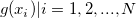
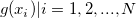
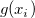
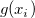
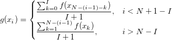
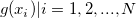
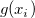

/math-dd7536794b63bf90eccfd37f9b147d7f.png "I") により定義されます。 {
により定義されます。 {/math-77de77f4e5e605f291e210eddd5c4613.png "f(x_i)|i=1, 2, ..., N") } を入力データのY値とし、 {} を新しいデータデットのY値とします(
} を入力データのY値とし、 {} を新しいデータデットのY値とします(/math-8d9c307cb7f3c4a32822a51922d1ceaa.png "N") はデータセットのサイズ)。各  は、次の計算式で算出します。
はデータセットのサイズ)。各  は、次の計算式で算出します。
- 
移動平均フィルタとFIRフィルタを含む2つのフィルタを使って、デシメーションを実行します。
このXファンクションで使われるFIRフィルタは、通常のウィンドウを元にした有限インルスフィルタです。フィルタの次数は、order 変数で指定されます。
移動平均フィルタが適用されると、Originは以下のステップを実行します。
により定義されます。 {} を入力データのY値とし、 {} を新しいデータデットのY値とします( はデータセットのサイズ)。各  は、次の計算式で算出します。